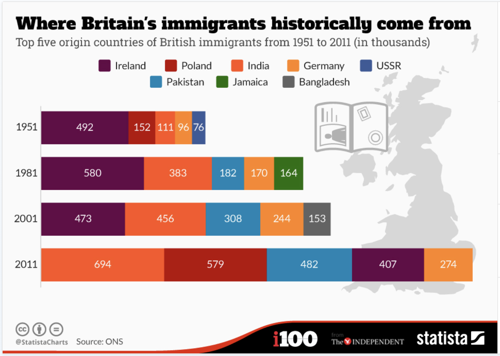

Watch Vicotrian style curry being made.
Women from Calcutta, India in 1957
In the beginning of the 20th century Indians had been living in Britain for generations. However, it was challenging to know the exact population based on the records kept. Estimates for the population in the 1930s and 1940s ranged from 5,000 to 8,000 Indians living in Britain. Even though the government had tried to limit immigration of the working class from 1919-1945 (Visram 2002, 254). This is the first population estimate that could be found for the population of Indian immigrants despite the fact that Indians had been living in Britain for decades.
In 2011, Indians were the largest immigrant group.
During the second World War some of the lascars decided to move inland to work in factories because of the high wages. In Birmingham, the Indian population in 1939 was about 100 however in 1945 this number had grown to 1000 immigrants (Visram 2016, 150).
After the second World War, there was a significant increase in the number of Indian immigrants that entered the UK to work. Due to a labor shortage in the UK, commonwealth citizens could enter the country freely from 1948 onward (British Library 1948).
There were increasing tensions between the British and those that newly arrived in the country. The portrayal in the newspapers was less about discovering a new culture and leaning towards the problems that they were seen to cause (“West Indians In Britain” 1954).
With the increase of Indian immigrants, the demand for products from their home also skyrocketed and led to numerous restaurants and shops opening. In 2011, Indians were the largest immigrant group as seen the graph on the right (McCarthy 2015). Although the food was already popular, curry made its way to become the national dish of the UK. Ultimately, although the increase in British Indians led to the popularity of Indian food to increase, however the foundations and presence of the culture started hundreds of years before the mass migration happened.
Indian immirgantion and cuisine has been shaped by decades of history. This culture was originally brought to Britain through the East India Company and the lascars and ayahs. The Anglo-Indians helped to popularize and anglicize curry to make it into a British dish. Queen Victoria through the British Raj made India fashionable and brought the Indian people into the public eye with her Indian servants. Following World War II, the Indian population significantly increased with it representing the largest immigrant group in 2011. Indian immigrantion and cuisine offers an interesting case study. Because of colonialism and trade, the cuisine and culture of India came to Britain before large groups of immigrants. They anglicized these aspects creating a unique version of them. Indian immigrantation and cuisine helps to expose the unintended effects of trade and colonialism. Overall, Indian immgration and cuisine has helped to shape Britain into the country it is today.
British Library. 1948. “Immigration from India.” Timeline. 1948. https://www.bl.uk/learning/timeline/item107671.html.
BY OUR SPECIAL CORRESPONDENT. "West Indians In Britain." Times, October 14, 1954, 4. The Times Digital Archive (accessed May 10, 2020). https://link.gale.com/apps/doc/CS67720014/TTDA?u=mnastolaf&sid=TTDA&xid=9355ec77.
McCarthy, Niall. 2015. Where Britain’s Immigrants Historically Come From. Statista.
Visram, Rozina. 2002. Asians in Britain: 400 Years of History. Pluto Press.
———. 2015. Ayahs, Lascars and Princes: The Story of Indians in Britain 1700-1947. 1st ed. Routledge.